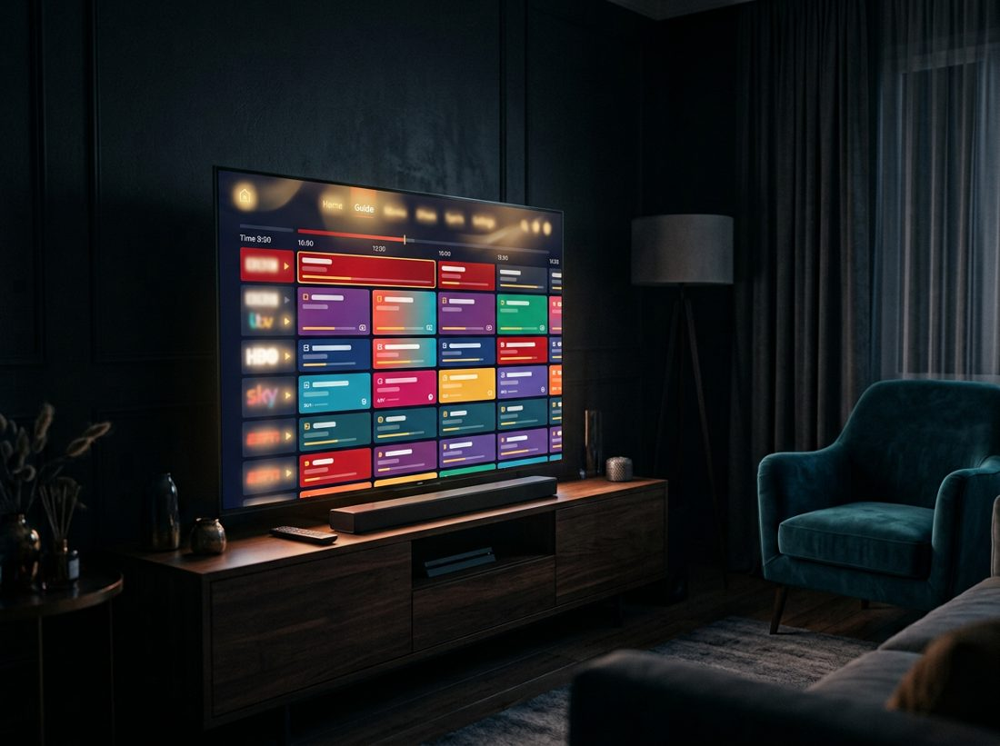

The everything-downloadable hub
One page.
Every download.
The PremiumTV apps, 175+ country playlists, every category M3U, the full TV-guide XML — all served directly from this site, with plain-English directions for every player. No account, no app store, no nonsense.
- —channels confirmed working
- —countries with a playlist
- —unique links checked

📱 The apps
Native PremiumTV apps with the checked lineup and TV guide built in. The current stable installers download from the project's public GitHub release storage — one click. Retired preview builds are not offered.
Stable 1.1.3 · broadcast audio fixes, Movies & Shows + transport player, moving loading bar
The app updates itself: Settings → App updates checks GitHub, downloads the new installer once, verifies its SHA-256 checksum and opens the platform installer.
1.1.3 fixes channels with missing broadcast audio (AC-3/E-AC-3/MP2 decoding and HLS audio-rendition recovery), expands Movies & Shows to 21 verified public-domain films and classic TV episodes with search, genre filters and built-in player transport controls, and adds a moving gold highlight sweep to the startup loading bar. It keeps the docked side player, category rail, automatic server backup, dead-channel filtering, and amber focus outlines. The retired 1.1.x preview channel stays gone and is never offered.
All Android versions & SHA-256 checksums
| Version | Channel | Size | SHA-256 |
|---|
All macOS installers (Intel & Apple Silicon, DMG & PKG)
🎞 Playlists (M3U)
Every playlist is a standard .m3u file that works in VLC, TiviMate,
IPTV Smarters, Kodi and any other M3U player. Download saves the
file; Copy URL copies a permanent always-up-to-date link to paste
into a player.
📦 Grab-everything bundles
One zip, no clicking around.
🗂 Category playlists
One M3U per category. Published = the categories inside the main playlist (with backup channel files). USA shelf = US-only category files. Global shelf = each category across the whole library.
🌍 Your country's playlist
175 countries, each with its own confirmed-working playlist — and most with their own TV-guide XML. Type to find yours.
📅 TV guide data (EPG)
XMLTV guides that fill in "what's on" in your player. The playlists already advertise their guide URLs, so most players pick the guide up automatically — these downloads are for players you point at a guide manually.
Per-country guides (e.g. USA.xml, UK.xml) are on each country card above — look for the Guide button.
🧭 Directions — pick your device
Honest, step-by-step. Each takes about two minutes.
🔥 Fire TV Stick / Fire TV
- On the Fire TV: Settings → My Fire TV → Developer Options → Install unknown apps → turn it on for Downloader. (If Developer Options is hidden: Settings → My Fire TV → About → click your device name 7 times.)
- Install the free Downloader app from the Amazon Appstore and open it.
- Type this hub's address followed by the APK path shown on the Android card above (or use the short link the card shows), then press Go.
- When the APK finishes downloading, choose Install, then Open.
- Done — PremiumTV ships with its playlist and guide built in. It refreshes them automatically.
📺 Android TV / Google TV
- Allow installs from unknown sources: Settings → Apps → Security & restrictions → Unknown sources (wording varies by TV) and enable it for your browser or file manager.
- Download the APK from the Apps section using the TV's browser — or download it on your phone/PC and move it over with Send Files to TV or a USB stick.
- Open the APK from the notification or a file manager and choose Install.
- Launch PremiumTV. The lineup and guide are built in and auto-refresh.
🍏 macOS
- From the Apps section download the DMG (drag-and-drop) or PKG (guided installer) for your Mac — Apple Silicon for M-series, Intel for older Macs.
- DMG: open it and drag PremiumTV into Applications. PKG: double-click and follow the prompts.
- First launch: right-click the app → Open → Open (the build isn't notarized with Apple, so macOS asks once).
- That's it — channels and guide are bundled and refresh on their own.
🎬 VLC (Windows / Mac / Linux / phone)
- Easiest: download any .m3u from this page and double-click it — VLC opens it as a channel list.
- Or stay always-up-to-date: in VLC choose Media → Open Network Stream (⌘N / Ctrl+N), paste a playlist's Copy URL link, and press Play.
- Browse channels via View → Playlist (Ctrl+L).
📡 TiviMate / IPTV Smarters / OTT Navigator
- Add a playlist: choose M3U Playlist → URL, and paste the Copy URL link of the playlist you want (main, your country, or a category).
- The guide usually configures itself — these playlists advertise their guide URL in the M3U header. If your app asks for an EPG URL, paste the Copy URL link from the TV guide section (use the
.xml.gzone if supported — it's 10× smaller). - Set playlist auto-update to daily; the library is re-checked and republished every day.
🟦 Kodi (PVR IPTV Simple Client)
- Install PVR IPTV Simple Client: Add-ons → Install from repository → PVR clients.
- Configure it: General → Location: Remote path, and paste a playlist's Copy URL link as the M3U URL.
- Under EPG, paste the guide URL from the TV guide section.
- Enable the client and restart Kodi — channels appear under TV.
🙋 About us
What PremiumTV is
PremiumTV is a small, independent project that collects publicly listed, free-to-watch TV streams from around the web and turns the mess into something you'd actually use: clean playlists, a real TV guide, and native apps for the living room.
Every day an automated pipeline pulls from dozens of public sources, removes duplicates, and actually connects to every single stream to see if it plays. Only links that pass make it into the playlists on this page. Dead links are retired automatically, new ones are hunted monthly, and every run is logged publicly.
What we believe
- Proof over promises. "11,000 channels" means 11,000 links a machine verified today — the run reports are public.
- No gatekeeping. No accounts, no trackers, no paywall, no "premium tier". Premium is the quality bar, not a price.
- Bring your own player. Our apps are the easy path, but every playlist works in any M3U player you already love.
What's in the library
—
The legal bit
PremiumTV hosts no video. The playlists are catalogs of stream URLs that broadcasters and aggregators have published openly on the internet — the same links any search engine can find. Availability is up to each broadcaster; if a stream owner wants a link removed, removing it from the public source removes it from the next day's run.
Get in touch / dig deeper
The whole pipeline — scraper, checkers, guide builder, app source — is open at github.com/cgyegcvcecvoc/PremiumTV1. Found a dead channel or want one added? Open an issue there and the next run will pick it up.